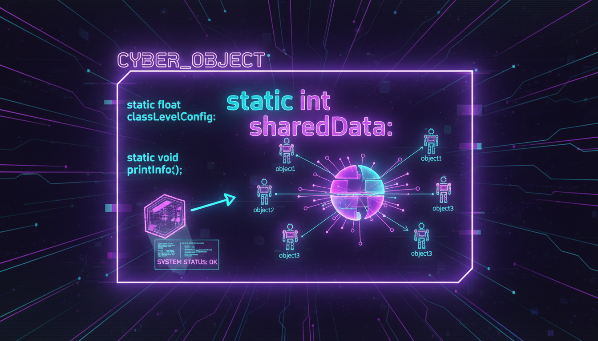

static поля та методи, лічильники об'єктів, singleton

Статичні члени належать класу, а не конкретному об'єкту. Вони спільні для всіх екземплярів класу.
#include <iostream>
#include <string>
class Student {
private:
std::string name;
static int count; // Спільне для всіх студентів
static double totalGpa;
public:
Student(std::string n, double gpa) : name(n) {
count++;
totalGpa += gpa;
}
~Student() {
count--;
}
static int getCount() { // Статичний метод
return count;
}
static double getAverageGpa() {
return count > 0 ? totalGpa / count : 0;
}
};
// Ініціалізація статичних членів
int Student::count = 0;
double Student::totalGpa = 0.0;
int main() {
Student s1("Ivan", 4.5);
Student s2("Maria", 4.8);
Student s3("Petro", 4.2);
std::cout << "Кількість студентів: " << Student::getCount() << std::endl;
std::cout << "Середній GPA: " << Student::getAverageGpa() << std::endl;
return 0;
}